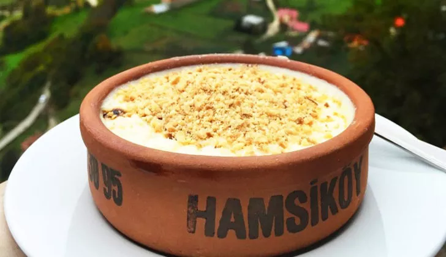

Hamsiköy Sütlacı

Karadeniz’in vazgeçilmez lezzetlerinden biri Meşhur Hamsiköy sütlacını bir defa yediniz mi tadı damağınızda kalacak. Yerinde yemesi gibi olmaz tabi ama o tadı evimizde yakalamamız da mümkün.
Tarif : Emre Çetinkaya
Karadeniz’in vazgeçilmez lezzetlerinden biri Meşhur Hamsiköy sütlacını bir defa yediniz mi tadı damağınızda kalacak. Yerinde yemesi gibi olmaz tabi ama o tadı evimizde yakalamamız da mümkün.
Tarif : Emre Çetinkaya
Üzeri için:
Karadeniz’in vazgeçilmez lezzetlerinden biri Meşhur Hamsiköy sütlacını bir defa yediniz mi tadı damağınızda kalacak. Yerinde yemesi gibi olmaz tabi ama o tadı evimizde yakalamamız da mümkün. Uğraşmaya gerçekten değecek bir tarif. O zaman hemen başlayalım.
Afiyet olsun :)